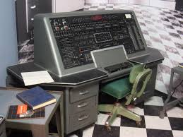

Univac 1

Univac 1 was the first commercial computer created in the United States.
It was designed by J. Presper Eckert and John Mauchly, who began developing it within their
company, the Eckert-Mauchly Computer Corporation.
UNIVAC I was handed over to the United States Census Bureau on March 31, 1951.
When it was produced
The univac 1 was born around 1951/1952
Popularity
UNIVAC was the first commercial computer, it was a not very well known computer in the
world but was very popular in America.
Dimension
Its dimensions are similar to those of a large wardrobe.
Purpose of use
UNIVAC was created to store both instructions and data in
a common storage unit
Style
The console was very complex, it consisted of many buttons of different colors while the rest
was of a single color
Age of users
It was used in companies and consequently it was used by adults
Univac 1 is a very large desktop computer, it has only a few features while computers today
have many features and are portable, they have a very advanced operating system, in
addition to complicated calculations, the PC is now equipped with search engines.
Kind of technology
it is an electronic technology that had the function of performing rapid, and relatively simple,
arithmetic and data transport operations.
Price
The cost of this computer was between $ 1.25 million and $ 1.5 million. Now a UNIVAC I can
even cost $ 8 million.
Time spent using it
This computer was mainly used in companies as an inventory system and its use was daily
and for hours.
An Interview
Here is a small interview with John Mauchly
a) Do you know Univac 1?
b) Yes, I created it.
a) When was Univac 1 born?
b) The univac 1 was born in around 1951/1952
a) Why did you create Univac 1?
b) I created it for companies and the American government.
a) ok thank you.